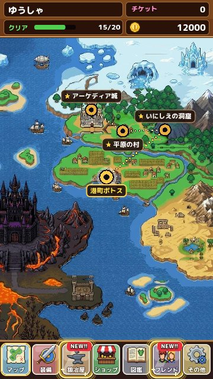

地上のエリア紹介
王さまのお城から始まる地上の各エリアの雰囲気と、進め方のポイントを紹介します。 更新：2026-11-13
地上の旅
冒険の舞台となる地上には、草原、洞窟、港町、砂漠、小さな島、氷の大地などさまざまな場所があります。エリアの最後の STAGE をクリアするたびに地図に点線がのびて、次の場所へ進めるようになります。ここでは、序盤から中盤のエリアを中心に紹介します。

アーケディア城と平原の村
アーケディア城は、王さまのいるお城です。城の中にはかかしがいて、ガードの練習をいつでもできます。
平原の村は、最初に訪れる村です。ここで初めてショップと鍛冶屋が使えるようになります。出てくる敵は弱く、一度に出る数も少ないので、ガードの練習にちょうどいい場所です。STAGE 5 のボスは、翼をもつ竜。最初の大きな山場です。
いにしえの洞窟と港町ポトス
いにしえの洞窟は、ゴーレムが住む古い洞窟です。ゴーレムは硬く、武器の種類で効き方が大きく変わります。弱点の武器を用意してから挑みましょう。
港町ポトスは、海に面した町です。ショップのガチャがひとつ上の品ぞろえになり、装備をそろえ直すのにぴったりです。海の竜のボスは水の属性の攻撃を使ってきます。
砂漠の 3 つのエリア
港町の先には、砂漠の遺跡群、砂漠のオアシス、砂漠の宮殿 が広がります。熱い砂の中に住む魔物は、火や光の属性を持つものが多く、エリアごとに弱点の傾向がちがいます。オアシスにはショップがあり、ここから先の旅に必要な装備がそろいます。
島と海辺の里
砂漠をこえると、海の上の小島や、漁師の里、遠くに見える孤島へ。小島や孤島には、宝箱がたくさん手に入る特別な STAGE もあります。漁師の里にもショップがあり、さらに強い装備が手に入ります。
その先へ
旅の後半では、凍りついた洞窟や宮殿、闇に包まれた場所、燃えさかる洞窟などを通り、物語の大きな山場へ向かいます。ここから先は、ぜひ自分の目で確かめてください。後半のボスは、弱点が途中で変わったり、武器のスキルを封じたりと、手ごわい相手ばかりです。
エリアの進み方のコツ
- 各エリアの STAGE 4 には中ボスがいます。中ボスは、そのエリアの雑魚よりずっと強い相手です
- STAGE 5 のボスを初めて倒すと、そのボスにちなんだ武器などのごほうびがもらえます
- 新しいエリアでは、まず STAGE の「詳細」で敵の顔ぶれを確かめましょう
- ショップのある町に着いたら、ガチャの品ぞろえが変わっていないか見てみましょう
エリアごとの曲
エリアには、それぞれ雰囲気に合った戦いの曲が流れます。草原の明るい曲、洞窟の静かな曲、砂漠の熱い曲と、旅が進むにつれて曲も変わっていきます。ボスにはそれぞれ専用の曲があるので、新しいボスと出会ったときは曲にも耳を傾けてみてください。